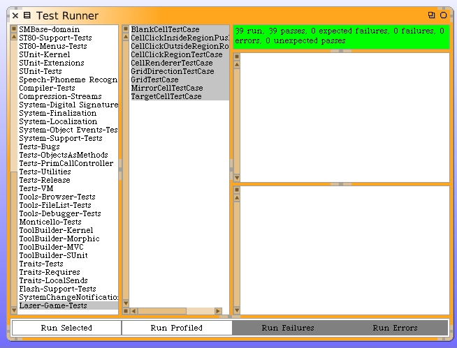

We have our unit tests. Now we need to make the mirror cells move according to our intents. This is a two-part exercise. The first part will be to get the Grid model working correctly. Our new unit tests will pass when we do. The second part is to translate the mouse-up events into real push messages and see the results visually. That will be cool.
We begin with those stub methods we wrote on the Grid class. Let's work on the push north method first.
pushCellNorthFromLocation: aPoint
| cell direction vector swapLoc swapCell |
cell := self at: aPoint.
cell class = MirrorCell ifFalse: [^cell].
direction := GridDirection directionFor: #north.
vector := direction vector.
swapLoc := aPoint + vector.
swapCell := self at: swapLoc.
swapCell isNil ifTrue: [^cell].
swapCell class = BlankCell ifFalse: [^cell].
self swapCell: cell with: swapCell.
^swapCell
The #swapCell:with: method still needs to be written. What we are trying to do in the method above is exit when the cell type is wrong or if the adjacent cell is off the edge of the board. The direction code should look familiar. Let's write the swap cell code.
swapCell: aCell with: anotherCell
| oldLocation newLocation |
oldLocation := aCell gridLocation copy.
newLocation := anotherCell gridLocation copy.
self at: newLocation put: aCell.
self at: oldLocation put: anotherCell
As we start to think about the other push directions it become apparent that we can refactor our push north method into two instance methods. One to determine the direction, and the other to do all the condition codes. Here is the refactored method and the new support method.
pushCellNorthFromLocation: aPoint
| direction |
direction := GridDirection directionFor: #north.
^self pushCell: direction fromLocation: aPoint.
pushCell: aGridDirection fromLocation: aPoint
| cell vector swapLoc swapCell |
cell := self at: aPoint.
cell class = MirrorCell ifFalse: [^cell].
vector := aGridDirection vector.
swapLoc := aPoint + vector.
swapCell := self at: swapLoc.
swapCell isNil ifTrue: [^cell].
swapCell class = BlankCell ifFalse: [^cell].
self swapCell: cell with: swapCell.
^swapCell
It's easy to write the other push directional methods.
pushCellEastFromLocation: aPoint
| direction |
direction := GridDirection directionFor: #east.
^self pushCell: direction fromLocation: aPoint.
pushCellSouthFromLocation: aPoint
| direction |
direction := GridDirection directionFor: #south.
^self pushCell: direction fromLocation: aPoint.
pushCellWestFromLocation: aPoint
| direction |
direction := GridDirection directionFor: #west.
^self pushCell: direction fromLocation: aPoint.
When we run our unit tests they pass.
